The compound of ametal found in nature is called amineral. Theminerals from which metal can be economically and conveniently extracted are calledores . An ore is usually contaminated with earthy or undesired materials known as gangue.
(a) Native ores contain the metal in free state. Silver, gold, platinum etc, occur as native ores.
(b) Oxidised ores consist of oxides or oxysalts (e.g. carbonates, phosphates, sulphates and silicates ) of metals.
(c) Sulphurised ores consist of sulphides of metals like iron, lead, zinc, mercury etc.
(d) Halide ores consist of halides of metals.
Metallurgy :
The scientific and technological process used for the extraction/isolation of the metal from its ore is called as metallurgy.
The isolation and extraction ofmetals from their ores involve the following major steps:
(A) Crushing and Grinding : The ore is first crushed by jaw crushers and ground to a powder.
(B) Concentration :
The removal of unwanted useless impurities fromthe ore is called dressing, concentration or benefaction of ore.
(i) Hydraulic washing or Gravity separation or Levigation method :
It is based on the difference in the densities of the gangue and ore particles. This method is generally used for the concentration of oxide and native ores.
(ii) Electromagnetic separation :
It is based on differences in magnetic properties of the ore components.
Chromite ore(FeO.Cr2O3) is separated from nonmagnetic silicious
impurities and cassiterite ore(SnO2) is separated frommagneticWolframite
(FeWO
(iii) Froth floatation process.
Thismethod is commonlyused for the concentration of the low grade sulphide ores like galena, PbS (ore of Pb); copper pyrites Cu2S.Fe2S3 or CuFeS2 (ore of copper) ; zinc blende, ZnS (ore of zinc) etc., and is based on the fact that gangue and ore particles have different degree of wettabilitywithwater and pine oil; the gangue particles are preferentially wetted by water while the ore particles are wetted by oil. In this process one or more chemical frothing agents are added.
(iv) Leaching: Leaching is often used if the ore is soluble in some suitable solvent, e.g, acids, bases and suitable chemical reagents.
(C) Extraction of crude metal from concentrated ore :
The isolation ofmetals fromconcentrated ore involves twomajor steps as given below.
(i) Conversion to oxide :
Calcination.strong It is a process of heating the concentrated ore strongly in a limited supply of air or in the absence of air. The process of calcination brings about the following changes :
(a) The carbonate ore gets decomposed to form the oxide of the metal.
(b) Water of crystallisation present in the hydrated oxide ore gets lost as moisture.
(c)Organicmatter, if present in the ore, gets expelled and the ore becomes porous. Volatile impurities are removed.
Roasting :
It is a process of heating the concentrated ore (generally sulphide ore) strongly in the excess of air or O2 below its melting point. Roasting is an exothermic process once started it does not require additional heating.
Smelting :
Slag formation : In many extraction processes, an oxide is added deliberately to combine with other impurities and form a stable molten phase immiscible withmoltenmetal called a slag. The process is termed smelting.
The principle of slag formation is essentially the following : Nonmetal oxide (acidic oxide) + Metal oxide (basic oxide) --> Fusible (easilymelted) slag
Removal of unwanted basic and acidic oxides: For example, FeO is the impurity in extraction of Cu from copper pyrite.
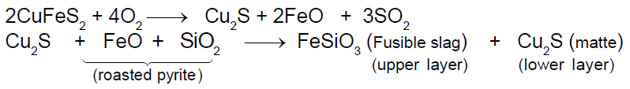Matte also contains a very small amount of iron(II) sulphide. To remove unwanted acidic impurities like sand and P4O10, smelting is done in the presence of limestone.
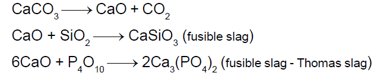(ii) Reduction of a metal oxide :
The free metal is obtained by reduction of a compound, using either a chemical reducing agent or electrolysis.
Chemical reduction method :
Reduction with carbon :
Reduction with CO : In some cases CO produced in the furnace itself is used as a reducing agent.
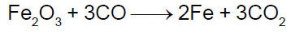Reduction by other metals :
Metallic oxides (Cr and Mn) can be reduced by a highly electropositive metal such as aluminium that liberates a large amount of energy (1675 kJ/mol) on oxidation to AI2O3. The process is known as Goldschmidt or
aluminothermic process and the reaction is known as thermite reaction.
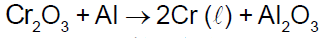Magnesium reduction method : Magnesium is used in similar way to reduce oxides. In certain cases where the oxide is too stable to reduce, electropositivemetals are used to reduce halides.
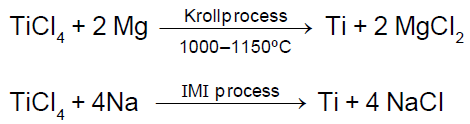Self-reduction method :
Thismethod is also called auto-reductionmethod or air reductionmethod. If the sulphide ore of some of the less electropositive metals like Hg, Cu, Pb, Sb, etc. are heated in air, a part of these is changed into oxide or sulphate then that reacts with the remaining part of the sulphide ore to give its metal and SO2.
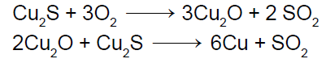Electrolytic reduction :
It presents the most powerful method of reduction and gives a very pure product. As it is an expensive method compared to chemical methods, it is used either for very reactivemetals such asmagnesium or aluminum or for production of samples of high purity.
1. In aqueous solution : Electrolysis can be carried out conveniently and cheaply in aqueous solution that the products do not react with water. Copper and zinc are obtained by electrolysis of aqueous solution of their sulphates.
2. In fused melts : Aluminum is obtained by electrolysis of a fused mixture of AI2O3 and cryolite Na3[AIF6].
Extraction of Aluminium: It involves the following processes
(a) Purification of bauxite :
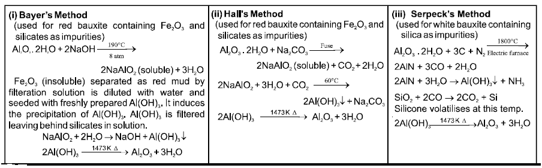(b) Electrolytic reduction (Hall-Heroult process) :
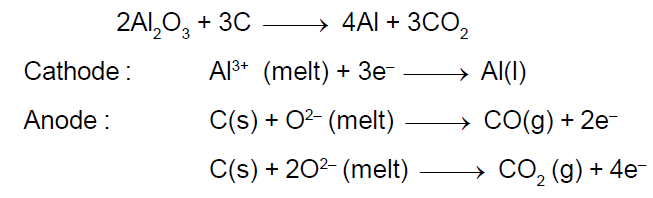Metallurgy of some important metals
1. Extraction of iron from ore haematite :
Reactions involved :
At 500 800 K (lower temperature range in the blast furnace)
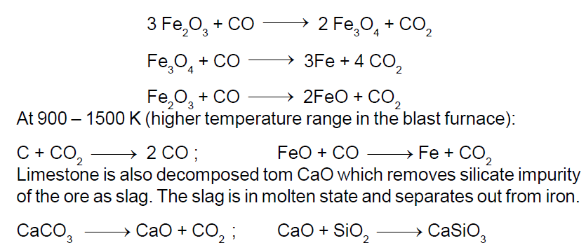2. Extraction of copper :
From copper glance / copper pyrite (self reduction) :
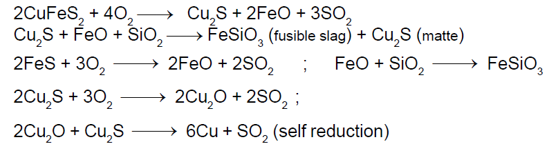3. Extraction of lead :
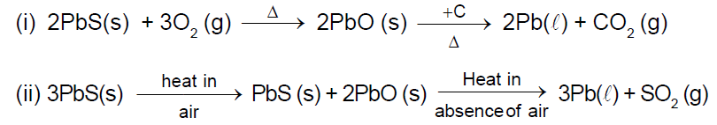4. Extraction of zinc from zinc blende :
The ore is roasted in presence of excess of air at temperature 1200 K.
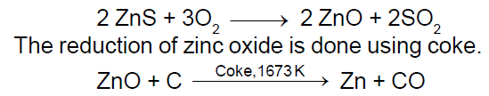5. Extraction of tin from cassiterite :
The concentrated ore is subjected to the electromagnetic separation to removemagnetic impurity ofWolframite.
SnO2 is reduced to metal using carbon at 12001300°C in an electric furnace. The product often contains traces of Fe, which is removed by blowing air through themoltenmixture to oxidise FeO which then floats to the surface.
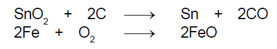6. Extraction of Magnesium :
From Sea water (Dows process) :
Seawater contains 0.13%magnesiumas chloride and sulphate. It involves following steps.
(a) Precipitation of magnesium as magnesium hydroxide by slaked lime.
(b) Preparation of hexahydratedmagnesium chloride. The solution on concentration and crystallisation gives the crystals of MgCl2.6H2O.
(c) Preparation of anhydrousmagnesium chloride.
(d) Electrolysis of fused anhydrous MgCl2 in presence of NaCl.
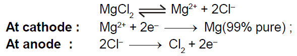7. Extraction of gold and silver (MacArthur-Forrest cyanide process) :
(a) Fromnative ores : Extraction of gold and silver involves leaching the metal with CN.
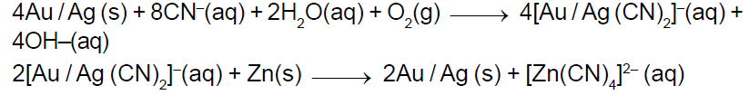(b) From argentite ore :
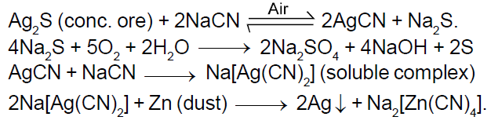Purification or Refining of metals :
Physicalmethods : Thesemethods include the following processes:
(I) Liquation process : This process is used for the purification of the metal, which itself is readily fusible, but the impurities present in it are not, used for the purification of Sn and Zn, and for removing Pb fromZn-Ag alloy.
(II) Fractional distillation process : This process is used to purify those metals which themselves are volatile and the impurities in them are nonvolatile and vice-versa. Zn, Cd and Hg are purified by this process.
(III) Zone refining method (Fractional crystallisation method) : This process is used when metals are required in very high purity, for specific application. For example pure Si and Ge are used in semiconductors
Chemicalmethods : Thesemethods include the followingmethods:
(I) OXIDATIVE REFINING :
This method is usually employed for refining metals like Pb, Ag, Cu, Fe, etc. In this method the molten impure metal is subjected to oxidation by various ways.
(II) POLING PROCESS :
This process is used for the purification of copper and tin which contains the impurities of their own oxides.
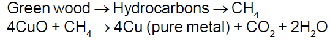(III) ELECTROLYTICREFINING:
Some metals such as Cu, Ni, and AI are refined electrolytically.
(IV) VAPOR PHASE REFINING :
(i) Extraction of Nickel (Monds process) :The sequence of reaction is
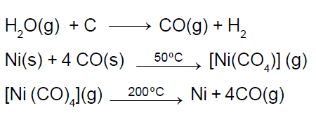(ii) Van ArkelDe Boer process :
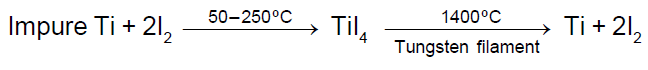